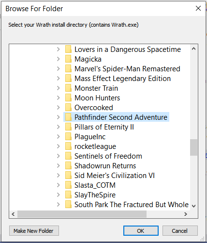
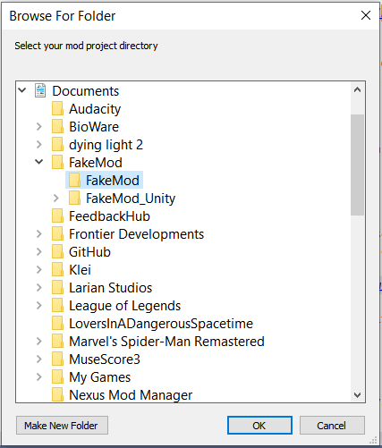
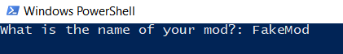
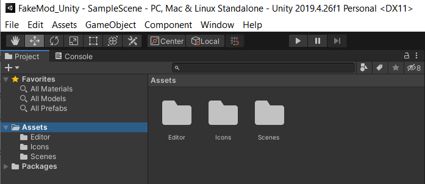

Getting Started
Using BlueprintCore
For a step-by-step walkthrough see Tutorials.
If you're having problems check Known Issues.
If you're interested in contributing see How to Contribute.
For general usage details see the links below:
- Blueprints - Creating, modifying, and referencing blueprints
- Actions and Conditions - Using actions and conditions
- Text, Logging, and Utils - General utility classes
- Understanding the API - Design and creation of the API
Project Setup
Quick-Start
If you have an existing mod to which you're integrating BPCore you'll need to go through the Full Setup. If you're starting a new mod you're in luck, BPCore now has Project Templates!
- Download and install Visual Studio, skip if you already have it
- When prompted for Workloads include ".NET desktop development", anything else is optional
- Download and install Unity version
2019.4.26f1, skip if you already have it - Open Unity and create a new project with the 3D template, then close it
- I recommend putting your Unity project folder in the same directory you put your mod project folder
- Seriously close it or you'll probably need to do some renaming of things in Unity yourself from BasicTemplate to your mod name
- Download the latest BasicTemplate
- Extract the contents
- Open the folder
BPCoreTemplate, right clickSetup.ps1, and selectRun with Powershell

- Follow the prompts (described below)
- First prompt is your Wrath installation directory. If you use the default steam location you can just click okay.

* Next prompt is the directory you want to use for your mod / C# project

* Next prompt is the directory for the Unity project you created

* Last prompt is the name of the mod, **no spaces**

- Open the Unity project you created. You should have an
Assetsfolder and anEditorfolder now.

* From the top bar select **Assets** > **Build AssetBundles**
* A moment later you should see a `StreamingAssets` folder. It may show as empty in Unity but open it up the folder in Explorer and it should contain a file called `<modname>_assets`.
* You can close Unity
- Navigate to your mod project folder and open
<ModName>.csprojin Visual Studio- Right click the project and select Clean
- When it completes (check the Output window at the bottom), right click again and select Unload Project
- Right click one more time and select Reload Project
- This fixes issues with Intellisense caching claiming your assembly reference is broken
- Still in Visual Studio, right click the project and select Add > Existing Item
- Navigate to the Unity project folder then
Assets/StreamingAssetsand select<modname>_assets - Right click
<modname>_assetsand set toCopy if newer
- Navigate to the Unity project folder then

- Build the project
- Launch Wrath and create or level up a character
- If all went well you should see a new feat called "My Feat"

You're all set! If you want to keep your assembly size small you can additionally configure ILStrip.
Troubleshooting
Some users reported an issue where Unity "locks" files. This prevents the rename from happening. If this happens just follow the instructions in the Skald's Vigor Tutorial.
Otherwise try opening powershell and running the script from there. This allows you to see any errors.
Full Setup
This assumes you have already created a C# project and are familiar with the basic mod setup in the Beginner Guide.
- Define the
WrathPathenvironment variable if you have not already- WrathPath should be the root install directory, usually
C:\Program Files (x86)\Steam\steamapps\common\Pathfinder Second Adventurefor Steam
- WrathPath should be the root install directory, usually
- Create and reference a public assembly.
- Install WW-Blueprint-Core using NuGet.
- Make sure your project is configured for .NET 4.7.2 and the latest C# language version
- In your .csproj file you should have the following properties:
<PropertyGroup> <LangVersion>latest</LangVersion> <TargetFramework>net472</TargetFramework> </PropertyGroup> - Add the required assembly references
- In your .csproj file add the following:
<ItemGroup> <!-- Wrath Assemblies --> <Reference Include="Assembly-CSharp-firstpass.dll"> <HintPath>$(WrathPath)\Wrath_Data\Managed\Assembly-CSharp-firstpass.dll</HintPath> </Reference> <Reference Include="Newtonsoft.Json"> <HintPath>$(WrathPath)\Wrath_Data\Managed\Newtonsoft.Json.dll</HintPath> </Reference> <Reference Include="Owlcat.Runtime.Core"> <HintPath>$(WrathPath)\Wrath_Data\Managed\Owlcat.Runtime.Core.dll</HintPath> </Reference> <Reference Include="Owlcat.Runtime.UI"> <HintPath>$(WrathPath)\Wrath_Data\Managed\Owlcat.Runtime.UI.dll</HintPath> </Reference> <Reference Include="Owlcat.Runtime.Validation"> <HintPath>$(WrathPath)\Wrath_Data\Managed\Owlcat.Runtime.Validation.dll</HintPath> </Reference> <Reference Include="Owlcat.Runtime.Visual"> <HintPath>$(WrathPath)\Wrath_Data\Managed\Owlcat.Runtime.Visual.dll</HintPath> </Reference> <Reference Include="UnityEngine"> <HintPath>$(WrathPath)\Wrath_Data\Managed\UnityEngine.dll</HintPath> </Reference> <Reference Include="UnityEngine.CoreModule"> <HintPath>$(WrathPath)\Wrath_Data\Managed\UnityEngine.CoreModule.dll</HintPath> </Reference> <!-- UMM & Harmony --> <Reference Include="0Harmony"> <HintPath>$(WrathPath)\Wrath_Data\Managed\UnityModManager\0Harmony.dll</HintPath> </Reference> <Reference Include="UnityModManager"> <HintPath>$(WrathPath)\Wrath_Data\Managed\UnityModManager\UnityModManager.dll</HintPath> </Reference> </ItemGroup>- Important: Make sure your assembly references do not declare
<Private>false</Private>or DLL Merging will fail
- Configure DLL Merging:
- Install ILRepack.MSBuild.Task using NuGet
- Add the following to your .csproj file, using your mod's assembly name in place of
MyAssemblyName:
<!-- DLL Merging --> <Target Name="ILRepack" AfterTargets="Build"> <ItemGroup> <InputAssemblies Include="BlueprintCore.dll" /> <InputAssemblies Include="MyAssemblyName.dll" /> <OutputAssembly Include="MyAssemblyName.dll" /> </ItemGroup> <Message Text="Merging: @(InputAssemblies) into @(OutputAssembly)" Importance="High" /> <ILRepack OutputType="Dll" MainAssembly="MyAssemblyName.dll" OutputAssembly="@(OutputAssembly)" InputAssemblies="@(InputAssemblies)" WorkingDirectory="$(OutputPath)" /> </Target>- ILRepack requires your game assembly to have the file name
Assembly-CSharp.dll. By default the publicizer createsAssembly-CSharp_public.dll. To resolve this update your assembly reference and publicize target in your project file:
<ItemGroup> <Reference Include="Assembly-CSharp"> <HintPath>$(SolutionDir)lib\Assembly-CSharp.dll</HintPath> </Reference> </ItemGroup> <!-- Publicize Target --> <Target Name="Publicize" AfterTargets="Clean"> <ItemGroup> <Assemblies Include="$(WrathPath)\Wrath_Data\Managed\Assembly-CSharp.dll" /> <PublicAssembly Include="$(SolutionDir)\lib\Assembly-CSharp_public.dll" /> <RenamedAssembly Include="$(SolutionDir)\lib\Assembly-CSharp.dll" /> </ItemGroup> <PublicizeTask InputAssemblies="@(Assemblies)" OutputDir="$(SolutionDir)lib/" /> <Move SourceFiles="@(PublicAssembly)" DestinationFiles="@(RenamedAssembly)" /> </Target> - (Optional) Create a new text file called
LocalizedStrings.json- Use this to define text used in your mod, see Text for more details
- Be sure to distribute this file with your mod assembly
- (Optional) Create a Unity AssetBundle called
<modname>_assets- Use this to import Unity assets, see Unity Assets for more details
- Be sure to distribute this file with your mod assembly
- You're ready to go!
If you already have a project or are having trouble, take a look at BlueprintCore Tutorial.csproj.
Your project file should look almost identical to the tutorial project file, with the exception that you may have additional package and assembly references. In particular make sure:
- Your publicized assembly is called
Assembly-CSharp.dll - Your assembly references do not set
<Private>false</Private> - All referenced assemblies are included
Without these ILRepack will fail.
Optional: Reduce Assembly Size with ILStrip
BPCore is a large library with wrappers for thousands of game types. It has a big footprint: 7MB at the time of writing.
The impact of this isn't significant but if you want to keep your assembly small use ILStrip. ILStrip removes unreferenced classes from an assembly, significantly reducing the size of mods using BPCore. It reduced the tutorial assembly from to ~400KB from ~8MB.
- Download ILStrip.CLI.zip
- Extract the files into a folder in your project's solution directory. I recommend creating a
toolsdirectory next to thelibdirectory.

- Add ILStrip to your project
- Open your .csproj file and add a new target:
<!-- Minimizes the assembly size --> <Target Name="ILStrip" AfterTargets="ILRepack"> <ItemGroup> <LocalAssembly Include="$(AssemblyName).dll" /> <ILStrip Include=""$(SolutionDir)\tools\BrokenEvent.ILStrip.CLI.exe"" /> <!-- BlueprintCore Entry Points --> <Entry Include="BlueprintCore.Utils.Assets.AssetTool/BlueprintsCaches_Patch" /> <Entry Include="BlueprintCore.Utils.Assets.AssetTool/BundlesLoadService_Patch" /> <Entry Include="BlueprintCore.Utils.LocalizationTool/LocalizationManager_Patch" /> <Entry Include="BlueprintCore.UnitParts.Replacements.UnitPartBuffSuppressFixed/Buff_OnAttach_Suppression_Patch" /> <!-- Replace with Your Mod Entry Points --> <Entry Include="BlueprintCoreTutorial.Main" /> <Entry Include="BlueprintCoreTutorial.Main/BlueprintsCaches_Patch" /> </ItemGroup> <Exec WorkingDirectory="$(OutputPath)" Command="@(ILStrip) @(LocalAssembly) @(LocalAssembly) -e @(Entry, ' -e ')"/> </Target>- Each
Entryitem is an entry point for your code. This includes any class called through reflection and any Harmony patches. - BPCore Patch Notes will call out any new entry points needed
- ILStrip breaks debugging symbols; disable it when using Wrath2Debug
Troubleshooting
You can open your assembly in the decompiler of your choice to sanity check. Make sure you see all the expected namespaces and classes.
ILStrip Removes Used Code
Chances are you are missing an entry point. Make sure every Harmony patch and every class referenced through reflection, such as the class with UMM's Load method, are listed as an Entry in the ILStrip target.
ILStrip Fails to Resolve Entry Point
Make sure you're using the correct name. Keep in mind nested and generic classes have different reference syntax:
- Default:
BlueprintCore.Utils.LocalizationTool - Nested:
BlueprintCore.Utils.LocalizationTool/LocalizationManager_Patch - Generic:
BlueprintCore.Utils.Blueprint`1- The number is the number of type arguments
If you're not sure what's wrong, remove all Entry items and build. In the Build Output ILStrip prints a line for every type indicating whether it is used or unused:

Optional: Automatic Mod Deployment
Using a Copy task you can automatically deploy your mod each time you build.
Add a DeployMod target to your .csproj file, using your mod's name in place of BlueprintCoreTutorial:
<!-- Automatic Deployment Setup -->
<Target Name="DeployMod" AfterTargets="ILStrip">
<ItemGroup>
<Assembly Include="$(OutputPath)\BlueprintCoreTutorial.dll" />
<ModConfig Include="$(OutputPath)\Info.json" />
<Strings Include="$(OutputPath)\LocalizedStrings.json" />
<Assets Include="$(OutputPath)\*_assets" />
</ItemGroup>
<Copy SourceFiles="@(Assembly)" DestinationFolder="$(WrathPath)\Mods\BlueprintCoreTutorial" />
<Copy SourceFiles="@(ModConfig)" DestinationFolder="$(WrathPath)\Mods\BlueprintCoreTutorial" />
<Copy SourceFiles="@(Strings)" DestinationFolder="$(WrathPath)\Mods\$(MSBuildProjectName)" />
<Copy SourceFiles="@(Assets)" DestinationFolder="$(WrathPath)\Mods\$(MSBuildProjectName)" />
</Target>
Make sure to use a different Assembly item name than in the ILStrip target. Although they are declared in the context of the target, they are global for the project file.
If you are not using ILStrip replace AfterTargets="ILStrip" with AfterTargets="ILRepack".